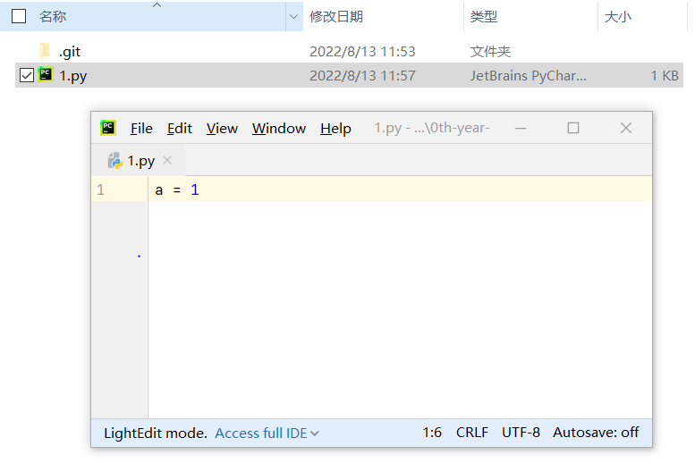

$ git log commit 35202068d3db531686b89f85116185e96bc85ed7 (HEAD -> master) Author: metal-cell <1904817346@qq.com> Date: Sat Aug 13 11:53:09 2022 +0800
create 1.py
我们对1.py文件进行一次修改:

然后我们就能在status中看到修改还没被提交的信息了
$ git status On branch master Changes not staged for commit: (use "git add <file>..." to update what will be committed) (use "git checkout -- <file>..." to discard changes in working directory)
modified: 1.py
no changes added to commit (use "git add" and/or "git commit -a")
$ git log commit 2b5d3bc896e12ad9dd05be886654a3d525bbfdb8 (HEAD -> master) Author: metal-cell <1904817346@qq.com> Date: Sat Aug 13 12:15:33 2022 +0800
change 1
commit 35202068d3db531686b89f85116185e96bc85ed7 Author: metal-cell <1904817346@qq.com> Date: Sat Aug 13 11:53:09 2022 +0800
create 1.py
如果删除一部分代码, 也会被记录上, 比如把 a = 1 改成 a = 2, 再添加一个 b = 1.
查看unstaged
$ git diff diff --git a/1.py b/1.py index d25d49e..61ce15f 100644 --- a/1.py +++ b/1.py @@ -1 +1,2 @@ -a = 1 \ No newline at end of file +a = 2 +b = 1 \ No newline at end of file
$ git add . diff --git a/1.py b/1.py index d25d49e..61ce15f 100644 --- a/1.py +++ b/1.py @@ -1 +1,2 @@ -a = 1 \ No newline at end of file +a = 2 +b = 1 \ No newline at end of file
# 对比三种不同的 diff 形式 $ git diff HEAD # staged & unstaged diff --git a/1.py b/1.py index d25d49e..ac13cf6 100644 --- a/1.py +++ b/1.py @@ -1 +1,3 @@ -a = 1 \ No newline at end of file +a = 2 +b = 1 +c = b \ No newline at end of file
$ git diff # unstaged diff --git a/1.py b/1.py index 61ce15f..ac13cf6 100644 --- a/1.py +++ b/1.py @@ -1,2 +1,3 @@ a = 2 -b = 1 \ No newline at end of file +b = 1 +c = b \ No newline at end of file
$ git diff --cached # staged diff --git a/1.py b/1.py index d25d49e..61ce15f 100644 --- a/1.py +++ b/1.py @@ -1 +1,2 @@ -a = 1 \ No newline at end of file +a = 2 +b = 1 \ No newline at end of file